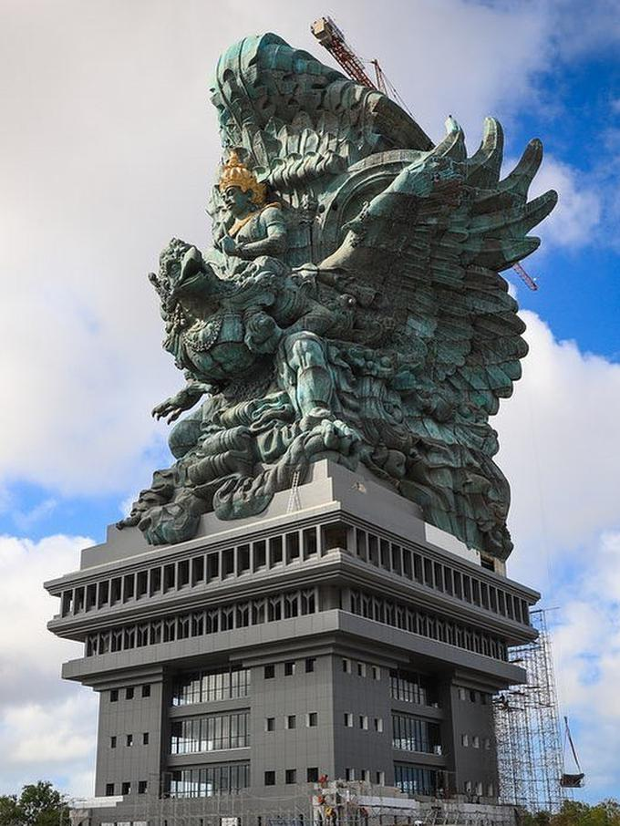
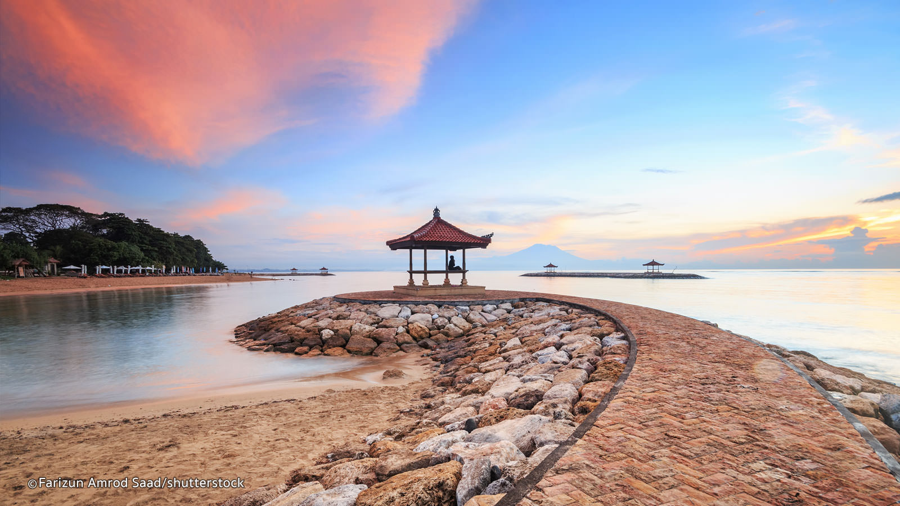

Bali Island
siapa yang tidak mengenal dengan pulau dengan sebutakan pulau dewata ini? namanya sudah sampai ke penjuru dunia. Ia terkenal karena keindahannya,keragamannya,keseniannya,kebuayaannya,keramahannya dan keelokannya.

Garuda Wisnu Kencana
Taman Budaya Garuda Wisnu Kencana (bahasa Inggris: Garuda Wisnu Kencana Cultural Park), disingkat GWK, adalah sebuah taman wisata di bagian selatan pulau Bali. Taman wisata ini terletak di Desa Ungasan, Kecamatan Kuta Selatan, Kabupaten Badung, kira-kira 40 kilometer di sebelah selatan Denpasar, ibu kota provinsi Bali.Di areal taman budaya ini, direncanakan akan didirikan sebuah landmark atau maskot Bali, yakni patung berukuran raksasa Dewa Wisnu yang sedang menunggangi tunggangannya, Garuda, setinggi 120 meter.[1]
Click For More Info

Sanur
Pantai Sanur adalah sebuah tempat pelancongan pariwisata yang terkenal di pulau Bali. Tempat ini letaknya adalah persis di sebelah timur kota Denpasar, ibu kota Bali. Sanur berada di Kotamadya Denpasar.
Karena memiliki ombak yang cukup tenang, maka pantai Sanur tidak bisa dipakai untuk surfing layaknya Pantai Kuta.[1] Tak jauh lepas Pantai Sanur terdapat juga lokasi wisata selam dan snorkeling. Oleh karena kondisinya yang ramah, lokasi selam ini dapat digunakan oleh para penyelam dari semua tingkatan keahlian.
Pantai Sanur juga dikenal sebagai Sunrise beach (pantai Matahari terbit) sebagai lawan dari Pantai Kuta.
Click For More Info
Bali Punya Keindahan
Bali, seperti itulah nama pulau yang memiliki ribuan tempat yang memiliki keindahan dan keelokan tersendiri. Serasa setiap kaki kita melangkah ,kita dapat merasakan keindahan yang dipancarkan pulau Dewata ini.